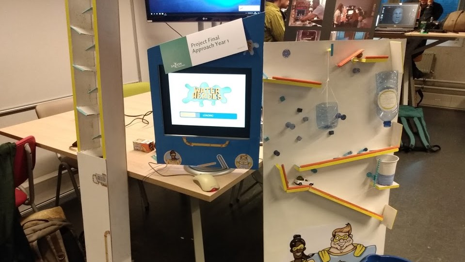
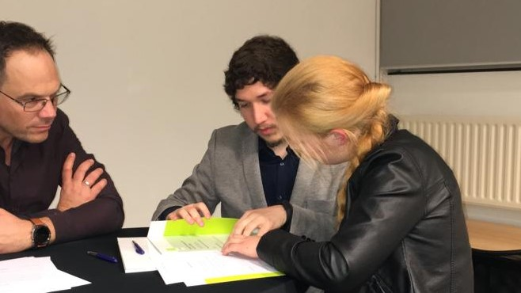
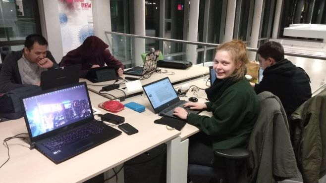
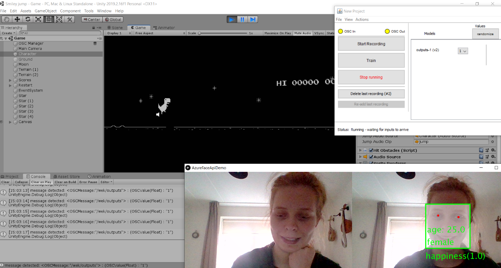
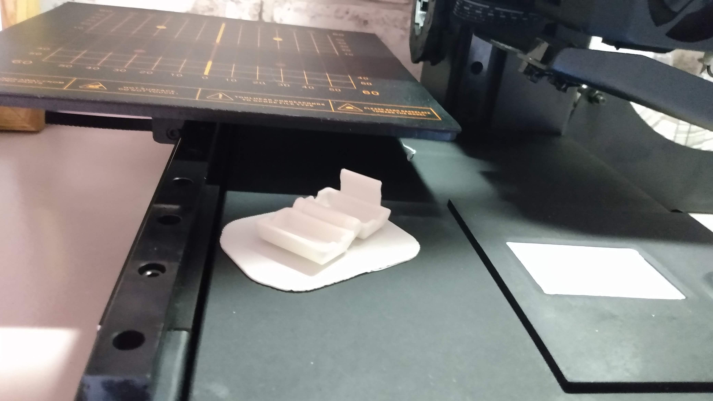

11-10-2019 open day!
Tonight I helped at the open day of my university. I was actually invited there by one of the teachers to showcase a project from the first year (Waterheroes). I really liked it to welcome potential students and meet students from other years.
29-10-2019 propaedeutic
Tonight was amazing. I received my (second) propaedeutic! It was in the evening and I was allowed to take 3 people with me so I asked my parents and sister to come. Upon arrival we were welcomed with coffee and cake and after that we were called to the front of the room individually, to sign our papers and to give a short speech. Last year was amazing and I hope to contine with this great study!
5-12-2019 Project time!
I´m currently working at a team project. We´re making a game that explains the different CMGT roles to the visitors of the open day. The team is amazing and I´m hoping for a good grade!
7-1-2020 Prototyping
During the course prototyping I learnt about how to use simple technology to test complex systems.After some testing around with the open sound protocol (OSC) I was able to add it to a unity project. If the user smiled it would be detected via the AzureFaceAPI and that would send and analyze the data via Wekinator (a machine learning program). Wekinator also uses OSC to send the data to Unity where the character would jump based on whether the user is smiling or not.
6-3-2020 Go Kibi!
For project start-up we had 3 weeks to build a succesful concept to win the attention of a dragonsden filled with succesfull profesionals from the workfield and guess what? We won!! Kibi is a app that scans your receipts and stores them savely for you. The app is also able to separate your purchases into categories and group them so you can keep track of your spending behavior, it also has the option for customized categories. We also made a desktop version for more complicated bookkeeping tasks. Since we won we plan on continuing with Kibi although we miss a capable engineer to make a minimal viable product.
1-5-2020 3D printer
Today my first 3D printer arrived and of course I needed to try it out! I was glad that the printer was already montaged and calibrated when I got it so I could use it right away. I’ve printed a small box that removes dust and irregularities from the filament before it goes into the machine to avoid blockages while printing.
5-6-2020 Printing my own design
I succeeded in printing my first (self-made) 3d design. It is only a simple shopping cart coin, but I hope that I will be able to make and print more complex designs as I continue to practice with Fusion 360.
22-10-2020 Persona minor skilled

For my minor I want to design an app to make studying words/concepts easier and if possible more fun. To discover what my audience (between the 15 and 18 yers) prefers I did a survey and multiple interviews and bundled the results in an empathy map, persona and a user journey map.